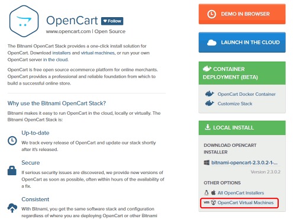
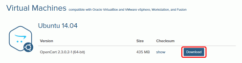
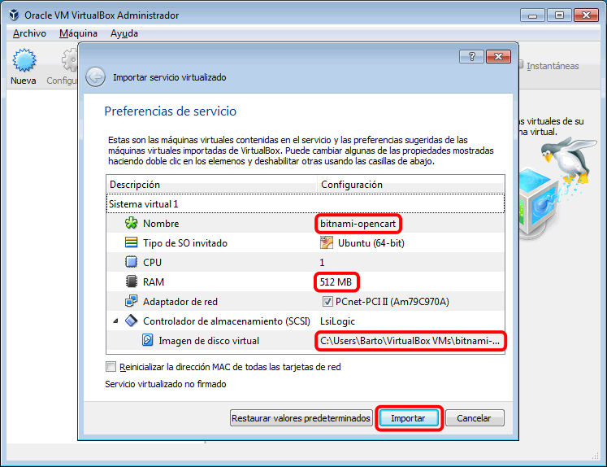
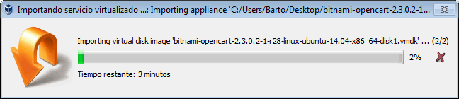
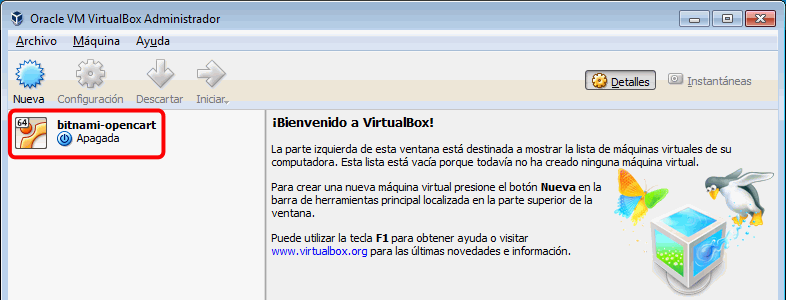
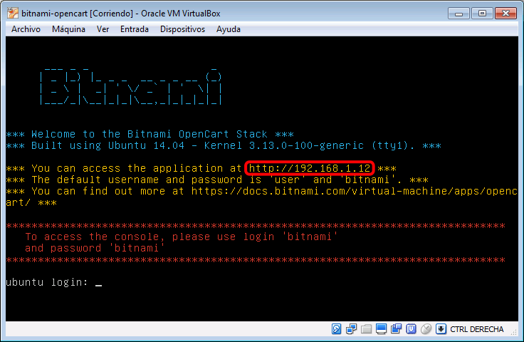
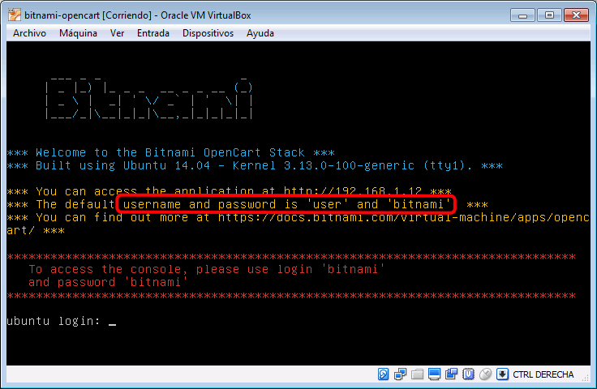

En esta lección se proponen soluciones detalladas de los ejercicios de Bitnami (1). Se recomienda intentar realizarlos primero sin recurrir a estas soluciones.
La página de OpenCart de Bitnami es https://bitnami.com/stack/opencart:

La página de máquinas virtuales de OpenCart de Bitnami es https://bitnami.com/stack/opencart/virtual-machine:

Para importar en VirtualBox la máquina virtual, haga doble clic en el fichero .OVA. Puede modificar el nombre de la máquina, la cantidad de memoria RAM o la ubicación de la imagen de disco virtual antes de hacer clic en el botón Importar.

La importación tardará unos minutos:

Al terminar la importación, la nueva máquina virtual se mostrará en VirtualBox.

La dirección IP de la máquina virtual se muestra en la pantalla inicial de la máquina virtual:

Para acceder a la tienda escriba la IP que se muestra en la pantalla. En la captura de ejemplo sería http:/192.168.1.12/
El nombre del usuario administrador y su contraseña se muestran también en la pantalla inicial de la máquina virtual:

Para acceder al panel de administración de la tienda se debe añadir /admin a la dirección IP. En la captura de ejemplo sería http:/192.168.1.12/admin